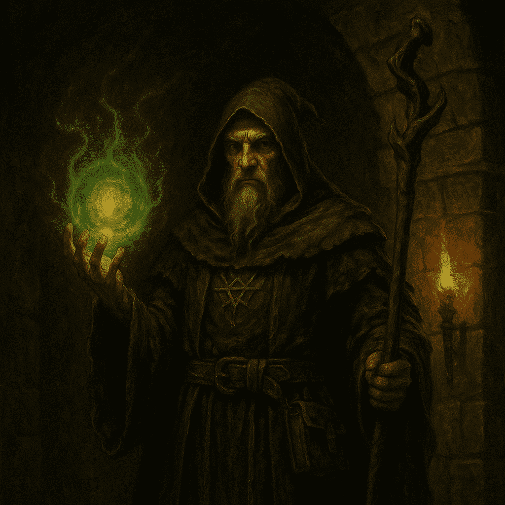

Guías recomendadas
CLASES
INFORMACIÓN
ESTADÍSTICAS BASE
MAGO

Maestro de Arcanos
El Mago domina las artes arcanas para controlar el campo de batalla desde la distancia. Sus hechizos de fuego, hielo y energía etérea infligen daño masivo, pero requiere de una gestión cuidadosa de maná y posicionamiento para no quedar expuesto. Con objetos que reducen los tiempos de recarga, puede encadenar combo tras combo y alterar el ritmo de la pelea a su favor.
- Fuerza: 6
- Vigor: 7
- Agilidad: 15
- Destreza: 17
- Voluntad: 20
- Conocimiento: 25
- Adaptabilidad: 15
- Salud: 97
GUERRERO
El Escudo Impasible
El Guerrero es el escudo y la espada de cualquier grupo, capaz de absorber el daño más brutal y responder con golpes devastadores. Especializado en tácticas de combate cuerpo a cuerpo, puede equipar armaduras pesadas y armas versátiles, adaptándose a defender puntos clave o iniciar cargas implacables. Su fortaleza física le permite pertrechar el frente y atraer la atención de los enemigos.
- Fuerza: 15
- Vigor: 15
- Agilidad: 15
- Destreza: 15
- Voluntad: 15
- Conocimiento: 15
- Adaptabilidad: 15
- Salud: 110
ARQUERO
Ojo Letal
El Arquero combina puntería impecable con movilidad excepcional, infligiendo daño letal a distancia antes de que el enemigo siquiera lo vea. Sus flechas pueden llevar efectos como veneno, aturdimiento o explosiones elementales, y maneja trampas para controlar zonas del mapa. Aunque frágil en combate cercano, un buen posicionamiento le convierte en un tirador imparable.
- Fuerza: 12
- Vigor: 10
- Agilidad: 20
- Destreza: 18
- Voluntad: 10
- Conocimiento: 12
- Adaptabilidad: 23
- Salud: 101
CLERIGO

Portador de Luz
El Clérigo es el pilar de la resistencia, bendiciendo a sus aliados con curaciones milagrosas y barreras sagradas. Usa magia divina para repeler a los no-muertos y purgar maldiciones, manteniendo al grupo en pie durante las batallas más difíciles. Su devoción le otorga tanto capacidades de apoyo como un sorprendente aguante para plantar cara a los enemigos que desafíen su fe.
- Fuerza: 13
- Vigor: 13
- Agilidad: 12
- Destreza: 14
- Voluntad: 23
- Conocimiento: 20
- Adaptabilidad: 12
- Salud: 105
DRUIDA

Guardián de la Naturaleza
El Druida se alía con los poderes de la naturaleza para cambiar el rumbo de la lucha: invoca bestias, planta raíces que inmovilizan y se transforma en formas animales poderosas. Su versatilidad le permite ser tanque, sanador o controlador de masas según la situación. Maestro del equilibrio, usa tanto la fuerza bruta del oso como la sabiduría de las raíces para proteger el ecosistema… y a sus compañeros.
- Fuerza: 11
- Vigor: 12
- Agilidad: 14
- Destreza: 12
- Voluntad: 18
- Conocimiento: 20
- Adaptabilidad: 18
- Salud: 104
PICARO
Sombra Letal
El Pícaro es un experto en el arte del sigilo y los ataques críticos: ataca rápido desde las sombras, desarma trampas y se mueve entre las sombras sin ser detectado. Sus dagas y arcos cortos infligen efectos de sangrado y veneno, y su habilidad para evadir y escabullirse le hace casi imposible de atrapar. Perfecto para hostigar líneas enemigas y neutralizar objetivos clave.
- Fuerza: 9
- Vigor: 10
- Agilidad: 21
- Destreza: 25
- Voluntad: 10
- Conocimiento: 10
- Adaptabilidad: 20
- Salud: 99
BARBARO

Furia Desatada
El Bárbaro canaliza su furia interior para desatar ataques brutales, sacrificando defensa por una ofensiva imparable. Sus gritos de guerra aturden a los oponentes y aumentan su fuerza, permitiéndole derribar puertas de escudo con un solo golpe. Con gran vitalidad y regeneración acelerada, puede permear la línea enemiga y sobrevivir donde otros caerían.
- Fuerza: 25
- Vigor: 25
- Agilidad: 13
- Destreza: 12
- Voluntad: 18
- Conocimiento: 5
- Adaptabilidad: 7
- Salud: 130
BRUJO
Señor de las Sombras
El Brujo forja pactos oscuros para invocar demonios y maldiciones que consumen la voluntad de sus enemigos. Sus conjuros de sombra y necromancia drenan vida mientras sus súbditos infernales luchan a su lado. Versátil entre daño sostenido y control de multitudes, el Brujo camina siempre al filo de la corrupción: cuanto más poder obtiene, más se retuerce su propia alma.
- Fuerza: 11
- Vigor: 16
- Agilidad: 14
- Destreza: 15
- Voluntad: 22
- Conocimiento: 15
- Adaptabilidad: 15
- Salud: 113
HECHICERO
Prodigio Elemental
El Hechicero domina la magia innata y el poder elemental, lanzando orbes de fuego, rayos de hielo y ráfagas de viento con extraordinaria fluidez. A diferencia del Mago, no necesita libros ni componentes: su energía proviene directamente de su interior. Con talentos en metamorfosis mágica, puede reforzar su cuerpo con armadura de cristal o moverse a una velocidad sobrenatural.
- Fuerza: 10
- Vigor: 10
- Agilidad: 10
- Destreza: 18
- Voluntad: 25
- Conocimiento: 20
- Adaptabilidad: 12
- Salud: 103